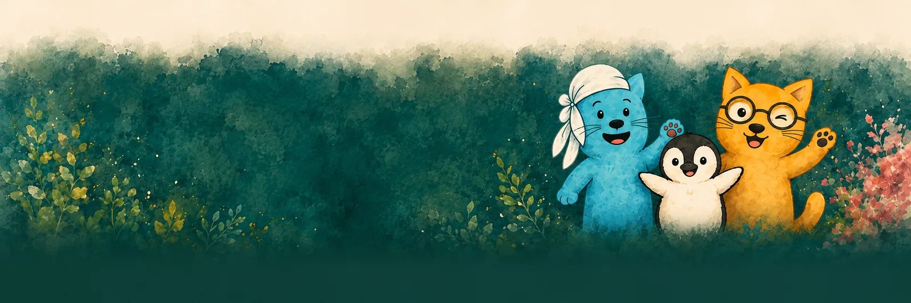

Wut & Eskalation
Wenn Gefühle überkochen und ich Dinge sage oder tue, die ich später bereue.
Für Väter
Klar hinschauen. Nicht beschämen. Neue Wege entwickeln.
Raum für Druck, Wut, Überforderung, Rückzug, Nähe und Verantwortung – ohne Urteil. Ich begleite Väter, die in Konflikten festhängen oder merken, dass alte Muster, Überlastung oder Sprachlosigkeit die Familie belasten.

Womit Väter oft kommen
Wenn Gefühle überkochen und ich Dinge sage oder tue, die ich später bereue.

Wenn ich mich zurückziehe, schweige oder nicht mehr weiß, wie ich reden soll.

Wenn ich meinem Kind nah sein und gleichzeitig ich selbst bleiben möchte.

Wenn Ansprüche, Erwartungen und Selbstzweifel schwer auf den Schultern liegen.
Ich arbeite nicht mit Scham, sondern mit Verstehen, Klarheit und konkreten Alltagsschritten.
Wut braucht sichere Wege. Beziehung braucht Wiederverbindung. Väter brauchen einen Raum, in dem auch Ambivalenz Platz hat.
Eine tragfähige Grenze hat vier Teile: Wahrnehmung, Stopp, Schutz und Beziehung. „Ich sehe, dass du außer dir bist. Ich lasse nicht zu, dass du schlägst. Ich gehe einen Schritt zurück. Ich bleibe erreichbar.“
Warum das hilft
Ich helfe dir, dich selbst zu verstehen – ohne dich zu verurteilen.
Kleine, konkrete Schritte, die zu dir und deiner Familie passen.
Ich schaue auf das Ganze – dich, deine Beziehungen und eure Dynamiken.
Ehrlich, respektvoll und mit klarem Standpunkt.
 Väter in Trennungskonflikten
Väter in Trennungskonflikten
 Väter mit hochbelastetem Alltag
Väter mit hochbelastetem Alltag
 Väter neurodivergenter Kinder
Väter neurodivergenter Kinder
 Väter, die anders reagieren wollen
Väter, die anders reagieren wollen

Ein erstes Gespräch ist unverbindlich – und du musst nichts vorbereiten.